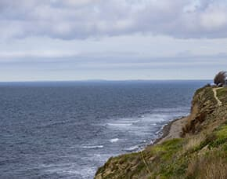
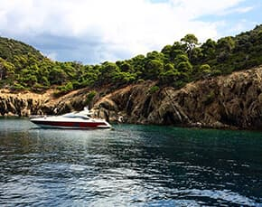
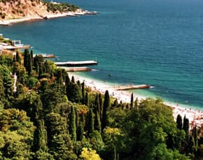
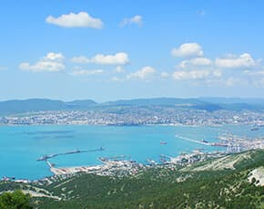
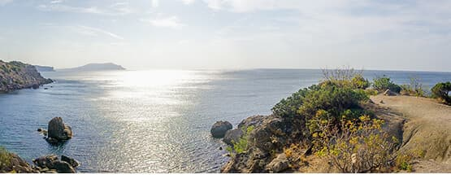

Каталог круизов
Сортировать круизы по цене
- Хит продаж
 Морской круиз в Анапу
Маршрут: Сочи-Лазаревское-Геленджик-Анапа
Продолжительность: 10 ч. 0 мин.
49 000 руб. - Акция
 Обзорная морская прогулка с экскурсией
Маршрут: Сочи-Адлер-Сочи (без высадки)
Продолжительность: 1 ч. 0 мин.
5 000 руб.15000 руб. - Скидка 10%
 Морская прогулка в Геленджик
Маршрут: Сочи-Туапсе-Геленджик
Продолжительность: 12 ч. 30 мин.
7 000 руб.10000 руб.  Морской круиз в Новороссийск
Маршрут: Сочи-Геленджик-Новороссйиск-Геленджик-Сочи
Продолжительность: 13 ч. 0 мин.
14 800 руб.